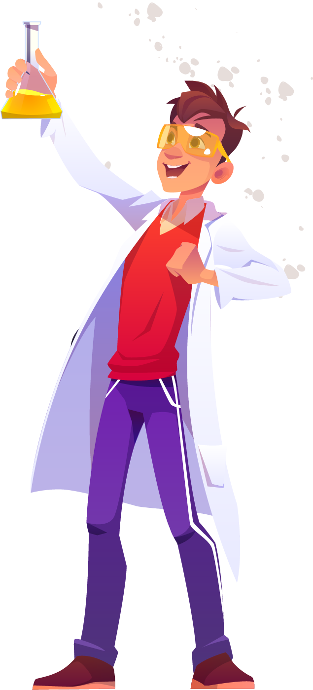
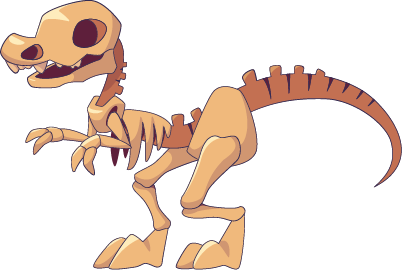

Special Events and Exhibitions

Support
There are various ways you can support the museum. Donations are very welcome and are an important way we keep this museum open and accessible to the whole community.
Volunteer
A number of people volunteer their time and effort to keep the displays in good order and ready for visitors to come and enjoy.
You can help volunteer in a number of different spheres.
Please contact us if you like to find out more about how you can get involved.

Internships
Are you interested in working in a museum?
Do you enjoy the fun and excitement of sharing the wonders of nature with people?
Well you could be just the right person to enjoy an internship at the museum.
